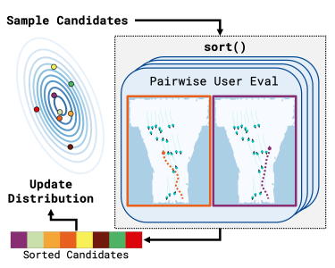
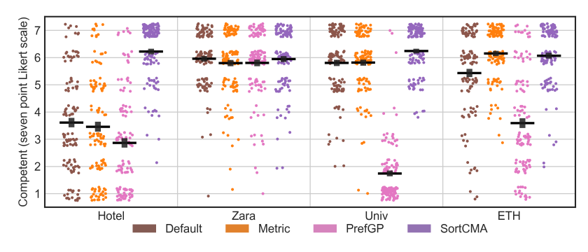
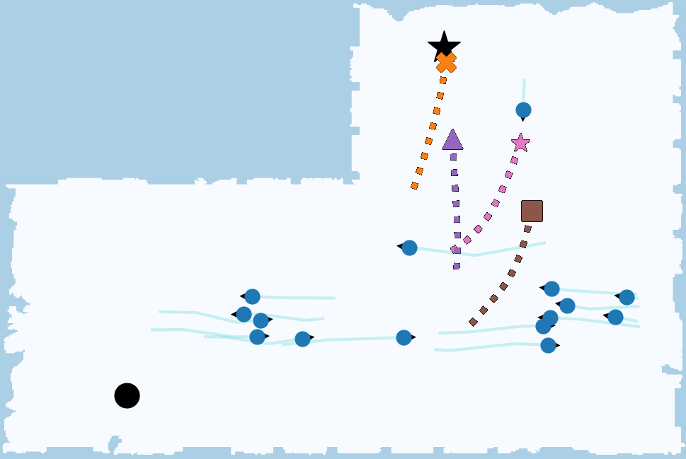
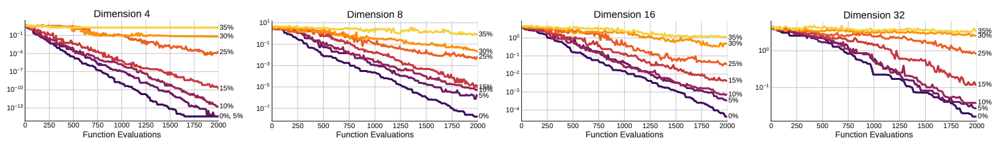

User Preference Tuning for better stereo depth edges on the Intel RealSense D435.
Typical black-box optimization approaches in robotics focus on learning from metric scores. However, that is not always possible, as not all developers have ground truth available. Learning appropriate robot behavior in human-centric contexts often requires querying users, who typically cannot provide precise metric scores. Existing approaches leverage human feedback in an attempt to model an implicit reward function; however, this reward may be difficult or impossible to effectively capture. In this work, we introduce SortCMA to optimize algorithm parameter configurations in high dimensions based on pairwise user preferences. SortCMA efficiently and robustly leverages user input to find parameter sets without directly modeling a reward. We apply this method to tuning a commercial depth sensor without ground truth, and to robot social navigation, which involves highly complex preferences over robot behavior. We show that our method succeeds in optimizing for the user's goals and perform a user study to evaluate social navigation results.
SortCMA: An interface to CMA-ES where configurations are evaluated via a user expressing pairwise preferences.
User Study Results:Across multiple environments, the policies tuned by SortCMA were preferred compared those tuned with metric rewards and another preferential tuning technique. And an example from the Zara environment
 SortCMA with noise: on the Ackley Test Function. Showing robustness to erroneous comparisons.
